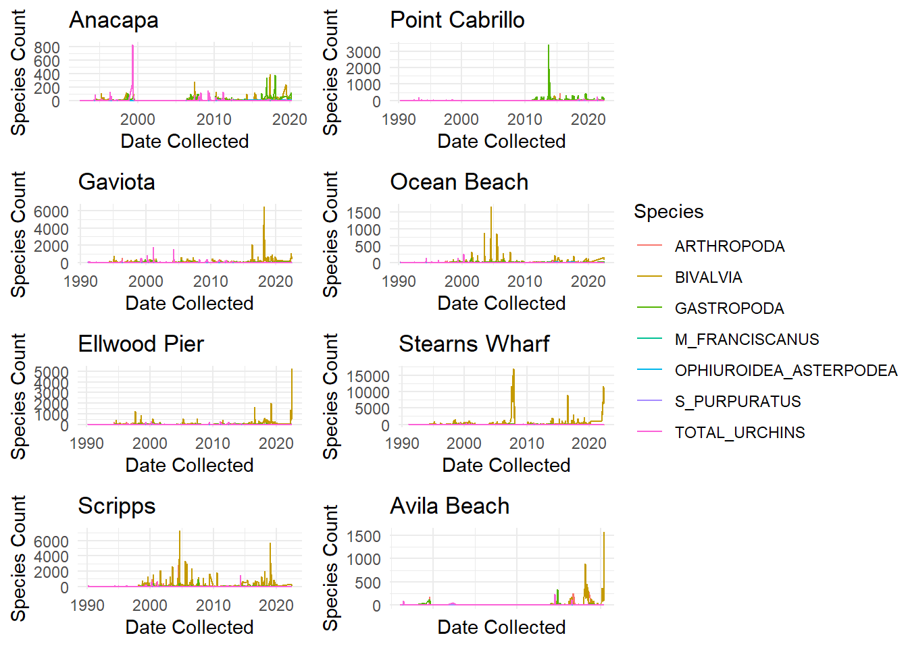

The aim of this project is to visualize the impact of protected regions on Urchin density plus selected bivalves, gastropods and crabs. This will provide an understanding of sensitivities these species have to developed coastlines.
Let’s explore the littoral zone!
The locations are at the end of piers, in the marine littoral zone:
The littoral zone is below the low-tide level and experiences the effects of tidal and longshore currents, and breaking waves ().
This dataset has 8 survey locations off piers in Southern California. Two of the piers are off protected coastal regions, the rest are populated and developed piers. The protected regions are all parks with minimal development and a marine conservation area protecting surrounding water. Gaviota Beach Pier with Kashtayit State Marine Conservation Area. Point Cabrillo Pier with the Point Cabrillo State Marine Reserve. Anacapa Island Pier with a variety of marine protected areas surrounding the Channel Islands chain.
This data set explores a variety of species:
Arthropoda: Phylum of lobsters, crabs, barnacles. Cuticle/exoskeleton made of chitin often mineralised with calcium carbonate (issue with ocean acidification).
Bivalvia: class belonging to phylum Mollusca, filter feeders such as clams, oysters, and mussels.
Gastropoda: class belonging to phylum Mollusca including snails, conch, abalone, limpets, and whelks with a range from scavengers, predators, herbivores, parasites
Ophiuroidea/Asterpodea: brittle stars and sea stars belonging to phylum Echinodermata , carnivores, filter feeders, and scavengers
S purpuratus: Pacific purple sea urchin, a sedentary species primarily feeding on algae
M franciscanus: Red sea urchins, eat kept and seaweed
Total Urchins: counts the last two, S purpuratus and M franciscanus.
Coexist peacefully in kelp forests (Southern Africa to Southern Alaska) until out of balance
Healthy kelp forests, urchins feed mainly on detritus/scraps of kelp that shed naturally, stay in hiding spots and eat fallen scraps of kelp
When detritus is scares, urchins begin to leave their hiding spots to search for food, feeding on living kelp - “urchin barrens”
Not simply overpopulation, can shift between kelp forests and urchin barrens without changing urchin density
Smith, J. G., et al. (2022) Alternations in the foraging behaviour of a primary consumer drive patch transition dynamics in a temperate rocky reef ecosystem. Ecology Letters.doi:10.1111/ele.14064.
2014 outbreak of sea urchins along California’s Central coast causing urchin barrens - causes was: loss of their main predator (sunflower sea star due to sea star wasting disease) and maritime heatwave made it difficult for kelp to grow, main culprit of eating living kelp was purple sea urchins
Data Collection and Tidying
Importing and Creating Data Frames
I imported the Urchin dataset found via LTER Santa Barbara Coastal, the metadata stated NA’s were written in the data as ‘-99999’.
Show the code
## Import Urchins data UrchinsDF <-read_csv(here("posts", "2022-12-9-stats-proj", "Invertebrate_Settlement_All_Years_20220722.csv"), na ="-99999")names(UrchinsDF) # Review the column namesunique(UrchinsDF$SITE) # View the names of the Urchin sites
The protection data was not immediately available, I had to create a data frame with the values 1 for protected, 0 for unprotected. I determined protection by the location of the piers. A pier is labeled unprotected if located in populated developed areas such as Ocean Beach, San Diego. Protected piers are located in undeveloped parks surrounded by marine protected areas, including Channel Islands National Park and Point Cabrillo State Marine Reserve.
Here the two dataframes are joined so all of the survey rows are connected with a protection status based on location. Protection status is changed to be a binary TRUE/FALSE option.
Show the code
## Join and select column fieldsUrchins <-left_join(UrchinsDF, ProtectionDF, by ="SITE") |>select(SITE, Protection, DATE_RETRIEVED, ARTHROPODA, BIVALVIA, GASTROPODA, OPHIUROIDEA_ASTERPODEA, S_PURPURATUS, M_FRANCISCANUS, TOTAL_URCHINS)## Set as date classUrchins$DATE_RETRIEVED <- lubridate::mdy(Urchins$DATE_RETRIEVED)## Collapse repeated surveys per day by siteUrchins <- Urchins |>group_by(SITE, DATE_RETRIEVED) |># Combine by date, per sitesummarise(ARTHROPODA =sum(ARTHROPODA, na.rm =TRUE),BIVALVIA =sum(BIVALVIA, na.rm =TRUE),GASTROPODA =sum(GASTROPODA, na.rm =TRUE),OPHIUROIDEA_ASTERPODEA =sum(OPHIUROIDEA_ASTERPODEA, na.rm =TRUE),S_PURPURATUS =sum(S_PURPURATUS, na.rm =TRUE),M_FRANCISCANUS =sum(M_FRANCISCANUS, na.rm =TRUE),TOTAL_URCHINS =sum(TOTAL_URCHINS, na.rm =TRUE),Protection =mean(Protection))# Change class to TRUE/FALSE for use in ggplot shape aestheticUrchins$Protection <-as.logical(Urchins$Protection)
Next the total urchin row is removed to focus on each species then pivoted the entire frame longer along each Species.
Show the code
## Create Species Data FrameSpeciesDF <- Urchins |>pivot_longer(cols =c("ARTHROPODA", "BIVALVIA", "GASTROPODA", "OPHIUROIDEA_ASTERPODEA", "S_PURPURATUS", "M_FRANCISCANUS", "TOTAL_URCHINS"),names_to ="Species",values_to ="Count",values_drop_na =TRUE) # Drop NA values# Add a binary row for species presence SpeciesDF$Present[SpeciesDF$Count >=1] <-1
Warning: Unknown or uninitialised column: `Present`.
Show the code
SpeciesDF$Present[SpeciesDF$Count ==0] <-0# Dataframe displays only binary presence for each species per surveyPresentDF <- SpeciesDF |>select(-Count) |>pivot_wider(values_from ="Present",names_from ="Species")
Data Exploration
Summary provides an overview of each variable (column) and the range of values found over the surveys.
Show the code
print(summary(Urchins))
SITE DATE_RETRIEVED ARTHROPODA BIVALVIA
Length:5935 Min. :1990-02-26 Min. : 0.00 Min. : 0.0
Class :character 1st Qu.:1995-09-12 1st Qu.: 0.00 1st Qu.: 0.0
Mode :character Median :2001-01-16 Median : 1.00 Median : 7.0
Mean :2003-01-08 Mean : 12.88 Mean : 109.1
3rd Qu.:2010-05-29 3rd Qu.: 8.00 3rd Qu.: 52.0
Max. :2022-06-21 Max. :2822.00 Max. :16861.0
GASTROPODA OPHIUROIDEA_ASTERPODEA S_PURPURATUS M_FRANCISCANUS
Min. : 0.00 Min. : 0.0000 Min. : 0.000 Min. : 0.0000
1st Qu.: 0.00 1st Qu.: 0.0000 1st Qu.: 0.000 1st Qu.: 0.0000
Median : 1.00 Median : 0.0000 Median : 0.000 Median : 0.0000
Mean : 14.71 Mean : 0.5582 Mean : 7.616 Mean : 0.2859
3rd Qu.: 12.00 3rd Qu.: 0.0000 3rd Qu.: 2.000 3rd Qu.: 0.0000
Max. :3406.00 Max. :213.0000 Max. :1789.000 Max. :82.0000
TOTAL_URCHINS Protection
Min. : 0.00 Mode :logical
1st Qu.: 0.00 FALSE:3999
Median : 0.00 TRUE :1936
Mean : 7.95
3rd Qu.: 2.00
Max. :1804.00
Initial visualizations
These initial visualizations can provide clues to trends in the data.
Below is a series of maps of species abundance over time for each survey site. We see a lot of high spikes in this data, and does not appear linear in nature.
Show the code
## How does each species vary per site:Ana <- SpeciesDF |>filter(SITE =="ANACAPA") |>ggplot(aes(x = DATE_RETRIEVED, y = Count, color = Species)) +geom_line() +theme_minimal() +labs(title ="Anacapa") +xlab("Date Collected") +ylab("Species Count")FBPC <- SpeciesDF |>filter(SITE =="FBPC") |>ggplot(aes(x = DATE_RETRIEVED, y = Count, color = Species)) +geom_line() +theme_minimal() +labs(title ="Point Cabrillo") +xlab("Date Collected") +ylab("Species Count")Gav <- SpeciesDF |>filter(SITE =="GAVIOTA") |>ggplot(aes(x = DATE_RETRIEVED, y = Count, color = Species)) +geom_line() +theme_minimal() +labs(title ="Gaviota") +xlab("Date Collected") +ylab("Species Count")OB <- SpeciesDF |>filter(SITE =="OCNBCH") |>ggplot(aes(x = DATE_RETRIEVED, y = Count, color = Species)) +geom_line() +theme_minimal() +labs(title ="Ocean Beach") +xlab("Date Collected") +ylab("Species Count")EL <- SpeciesDF |>filter(SITE =="SBELL") |>ggplot(aes(x = DATE_RETRIEVED, y = Count, color = Species)) +geom_line() +theme_minimal() +labs(title ="Ellwood Pier") +xlab("Date Collected") +ylab("Species Count")SW <- SpeciesDF |>filter(SITE =="SBSTWRF") |>ggplot(aes(x = DATE_RETRIEVED, y = Count, color = Species)) +geom_line() +theme_minimal() +labs(title ="Stearns Wharf") +xlab("Date Collected") +ylab("Species Count")Scrip <- SpeciesDF |>filter(SITE =="SIO") |>ggplot(aes(x = DATE_RETRIEVED, y = Count, color = Species)) +geom_line() +theme_minimal() +labs(title ="Scripps") +xlab("Date Collected") +ylab("Species Count")AV <- SpeciesDF |>filter(SITE =="AVILA") |>ggplot(aes(x = DATE_RETRIEVED, y = Count, color = Species)) +geom_line() +theme_minimal() +labs(title ="Avila Beach") +xlab("Date Collected") +ylab("Species Count")ggarrange(Ana, FBPC, Gav, OB, EL, SW, Scrip, AV +rremove("x.text"), ncol =2, nrow =4,common.legend =TRUE,legend ="right")

Plan
First, I want to check if there is a difference in means between protected and unprotected sites for total urchins and other species. The goal is to understand if any species are sensitive to unprotected regions. The null hypothesis predicts there is no change between the abundance of each species in protected versus unprotected regions. I will repeat this for each listed species and total urchins.
Total urchins found that protected regions had a mean of 6 urchins, and unprotected a total of 8 species. There is a 95% change of the difference in mean between total urchins in protected and unprotected sites falling between [-4.84, .26]. Notably, this range includes 0 and the p-value is not low at p = .08 so the null hypothesis cannot be rejected. This means we do not find a signficant difference in total urchins per survey between the protected and unprotected regions.
The Purple Sea Urchin and Brittle Star also had higher p-values (.08 and .67 respectively) so unable to reject the null hypothesis of no difference between the means of protected versus unprotected regions.
The only two that were not significant, also had extremely low means for counts per survey close to 0.
Rewrite the below numbers:
The difference of means between protected and unprotected sites for Arthropoda is signficant with a pvalue less than .01, suggesting we can reject the null hypothesis. There is a 95% probabilty that the true difference in means falls between [-15.86, -12.08]. There is an average of 15 Arthropoda in protected sites, versus 1 in unprotected.
The Bivalvia class also had a signficant difference with a 95% probability that the true difference in means is between [-136.6, -98.6]. The pvalue of under .01 suggests we can reject the null hypothesis. There is an average of 128 Bivalvia found in protected sites, versus 10 in unprotected. Gastropoda and M franciscanus also had significant p-values, shown in the table below.
DOUBLE CHECK X/Y for protected/unprotected
The above data led to the question…
Does it make sense to combine total urchins for surveys, or count them separately? How to make this code make sense???
Show the code
summary(lm(TOTAL_URCHINS ~ M_FRANCISCANUS, data = Urchins))
Call:
lm(formula = TOTAL_URCHINS ~ M_FRANCISCANUS, data = Urchins)
Residuals:
Min 1Q Median 3Q Max
-337.41 -6.45 -6.45 -5.45 1718.72
Coefficients:
Estimate Std. Error t value Pr(>|t|)
(Intercept) 6.4469 0.6456 9.986 <2e-16 ***
M_FRANCISCANUS 5.2557 0.2821 18.634 <2e-16 ***
---
Signif. codes: 0 '***' 0.001 '**' 0.01 '*' 0.05 '.' 0.1 ' ' 1
Residual standard error: 49.34 on 5933 degrees of freedom
Multiple R-squared: 0.05529, Adjusted R-squared: 0.05513
F-statistic: 347.2 on 1 and 5933 DF, p-value: < 2.2e-16
Show the code
summary(lm(TOTAL_URCHINS ~ S_PURPURATUS, data = Urchins))
Call:
lm(formula = TOTAL_URCHINS ~ S_PURPURATUS, data = Urchins)
Residuals:
Min 1Q Median 3Q Max
-15.176 -0.270 -0.261 -0.261 81.567
Coefficients:
Estimate Std. Error t value Pr(>|t|)
(Intercept) 0.2607187 0.0310821 8.388 <2e-16 ***
S_PURPURATUS 1.0095490 0.0006119 1649.960 <2e-16 ***
---
Signif. codes: 0 '***' 0.001 '**' 0.01 '*' 0.05 '.' 0.1 ' ' 1
Residual standard error: 2.367 on 5933 degrees of freedom
Multiple R-squared: 0.9978, Adjusted R-squared: 0.9978
F-statistic: 2.722e+06 on 1 and 5933 DF, p-value: < 2.2e-16
Show the code
summary(lm(TOTAL_URCHINS ~ OPHIUROIDEA_ASTERPODEA, data = Urchins))
Call:
lm(formula = TOTAL_URCHINS ~ OPHIUROIDEA_ASTERPODEA, data = Urchins)
Residuals:
Min 1Q Median 3Q Max
-117.36 -7.36 -7.36 -5.36 1796.64
Coefficients:
Estimate Std. Error t value Pr(>|t|)
(Intercept) 7.3626 0.6607 11.14 < 2e-16 ***
OPHIUROIDEA_ASTERPODEA 1.0516 0.1414 7.44 1.15e-13 ***
---
Signif. codes: 0 '***' 0.001 '**' 0.01 '*' 0.05 '.' 0.1 ' ' 1
Residual standard error: 50.53 on 5933 degrees of freedom
Multiple R-squared: 0.009243, Adjusted R-squared: 0.009076
F-statistic: 55.35 on 1 and 5933 DF, p-value: 1.152e-13
Interaction Model Ideas
Exploring species interactions to understand the ecological dynamics.
Show the code
# Basic linear regression of impact of protection on urchins, no time variable# summary(lm(species1 ~ species2 + species3 + Protection + Protection:species2, data = Urchins)) # Cannot use y as an interaction, look at species??# Each species on total urchinssummary(lm(TOTAL_URCHINS ~ ARTHROPODA + BIVALVIA + GASTROPODA + OPHIUROIDEA_ASTERPODEA, data = Urchins))
Call:
lm(formula = TOTAL_URCHINS ~ ARTHROPODA + BIVALVIA + GASTROPODA +
OPHIUROIDEA_ASTERPODEA, data = Urchins)
Residuals:
Min 1Q Median 3Q Max
-171.11 -6.90 -6.56 -5.56 1793.68
Coefficients:
Estimate Std. Error t value Pr(>|t|)
(Intercept) 6.5585247 0.6960460 9.423 < 2e-16 ***
ARTHROPODA 0.0600197 0.0117889 5.091 3.67e-07 ***
BIVALVIA -0.0007678 0.0010559 -0.727 0.467
GASTROPODA 0.0086916 0.0099323 0.875 0.382
OPHIUROIDEA_ASTERPODEA 1.0280257 0.1412025 7.281 3.76e-13 ***
---
Signif. codes: 0 '***' 0.001 '**' 0.01 '*' 0.05 '.' 0.1 ' ' 1
Residual standard error: 50.43 on 5930 degrees of freedom
Multiple R-squared: 0.01378, Adjusted R-squared: 0.01312
F-statistic: 20.72 on 4 and 5930 DF, p-value: < 2.2e-16
Show the code
# Species Interactions focused on which species of urchin#### Look at interaction of protection with species that have significant difference in protection# summary(lm(TOTAL_URCHINS ~ ARTHROPODA + BIVALVIA + GASTROPODA + OPHIUROIDEA_ASTERPODEA + Protection + :Protection, data = Urchins))
2 time series, 1 species or total, 1 protected and 1 no
Attempted a time series, because I wanted to explore the time variable. Look at
Show the code
# Time series Time versus Density in Protected versus Unprotectedsummary(lm(TOTAL_URCHINS ~ DATE_RETRIEVED + Protection + Protection:DATE_RETRIEVED, data = Urchins))
Call:
lm(formula = TOTAL_URCHINS ~ DATE_RETRIEVED + Protection + Protection:DATE_RETRIEVED,
data = Urchins)
Residuals:
Min 1Q Median 3Q Max
-12.60 -8.48 -5.66 -4.74 1791.54
Coefficients:
Estimate Std. Error t value Pr(>|t|)
(Intercept) 3.9273974 3.1886338 1.232 0.218
DATE_RETRIEVED 0.0001549 0.0002579 0.601 0.548
ProtectionTRUE 8.9307081 5.4423514 1.641 0.101
DATE_RETRIEVED:ProtectionTRUE -0.0001901 0.0004327 -0.439 0.661
Residual standard error: 50.68 on 5931 degrees of freedom
Multiple R-squared: 0.00383, Adjusted R-squared: 0.003326
F-statistic: 7.601 on 3 and 5931 DF, p-value: 4.526e-05
Show the code
# High pvalie, change is not statistically significant due to time# Interaction, .24 high pvalue, interaction significance### 24% probability get sample from the population even if null were true# Do not have enough evidence to reject the null# What are the values?
Tamma’s ideas - linear probability model
The data has large spikes which was making a linear regression challenging, so we edit to look just at species presence.
Create dataframe with species presence 1 or 0
t-test
Show the code
### Linear Regression on just presencesummary(lm(TOTAL_URCHINS ~ DATE_RETRIEVED + Protection + Protection:DATE_RETRIEVED, data = PresentDF))
Call:
lm(formula = TOTAL_URCHINS ~ DATE_RETRIEVED + Protection + Protection:DATE_RETRIEVED,
data = PresentDF)
Residuals:
Min 1Q Median 3Q Max
-0.4492 -0.3303 -0.3300 0.5612 0.6704
Coefficients:
Estimate Std. Error t value Pr(>|t|)
(Intercept) 3.309e-01 3.015e-02 10.977 <2e-16 ***
DATE_RETRIEVED -7.141e-08 2.438e-06 -0.029 0.9766
ProtectionTRUE 9.868e-02 5.146e-02 1.918 0.0552 .
DATE_RETRIEVED:ProtectionTRUE 1.094e-06 4.091e-06 0.268 0.7891
---
Signif. codes: 0 '***' 0.001 '**' 0.01 '*' 0.05 '.' 0.1 ' ' 1
Residual standard error: 0.4792 on 5931 degrees of freedom
Multiple R-squared: 0.0119, Adjusted R-squared: 0.0114
F-statistic: 23.82 on 3 and 5931 DF, p-value: 2.57e-15
Show the code
# as_tsibble(Urchins) %>%# model(# classical_decomposition(value, type = "additive")# ) %>%# components() %>%# autoplot() # why is this not working?
Discussion
This analysis found that some species are more sensitive to protection from coastal human development, including Arthropoda, Bivalvia, Gastropoda, and M franciscanus. Total urchins do not seem sensitive to the difference, but that changes when we separate the two urchin species, as the Purple Pacific Sea Urchin does not show a difference but the Red Sea Urchin does between the sites. Although the confidence interval is close to 0 with the means at 1 and 0, this may need to be reviewed further for signficance as the species appears to have generally low abundance in the data. This signifies an importance to measure them separately
Continued research could look further into the factors that affect these species, such as pollution levels due to high human activity
References
Britannica, The Editors of Encyclopaedia. “littoral zone”. Encyclopedia Britannica, 8 Aug. 2019, https://www.britannica.com/science/littoral-zone. Accessed 3 December 2022.